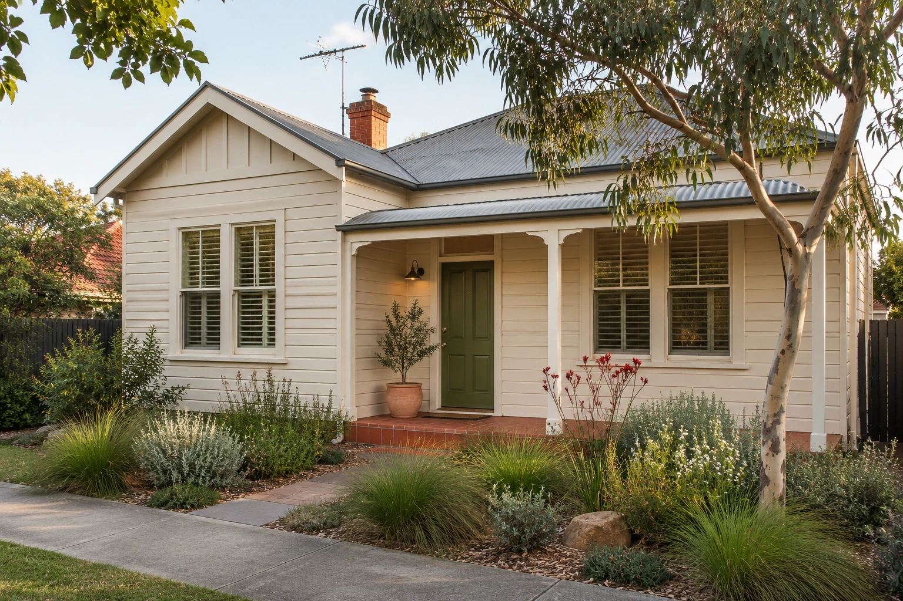
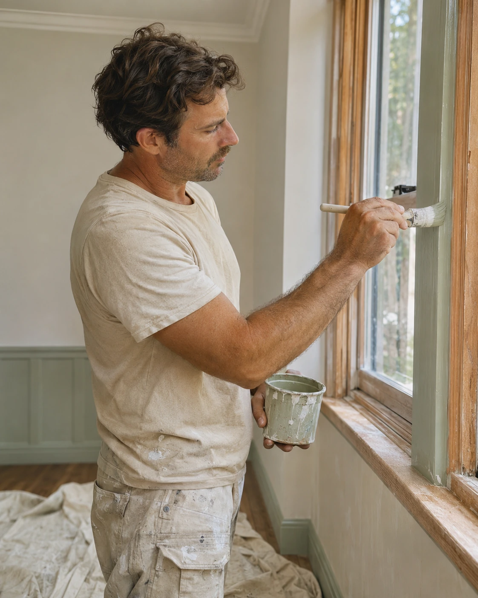
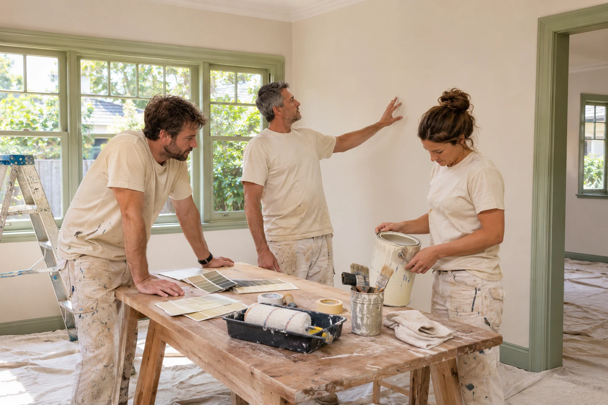
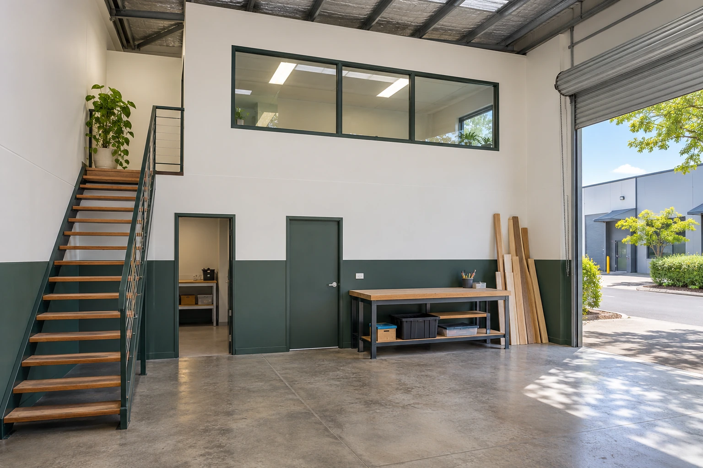
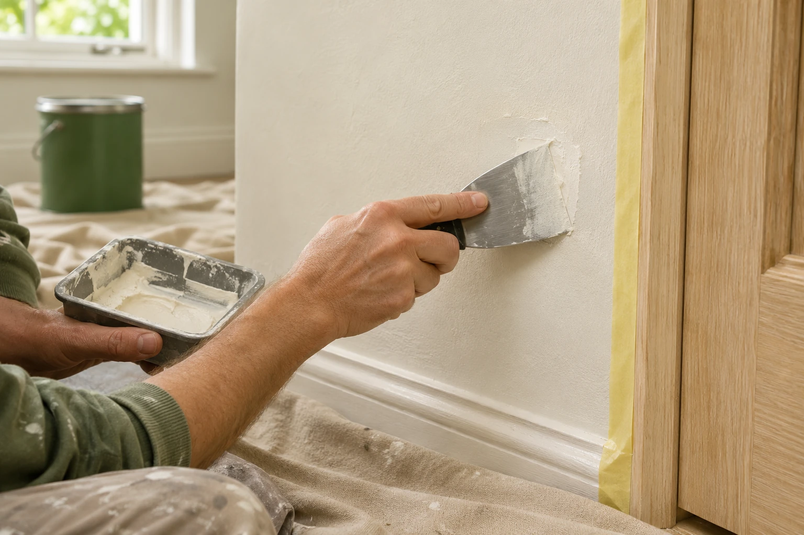

One shared plan.
We agree on the rooms, surfaces and sequence before work begins, so everyone is working towards the same finish.
BRENDALE PAINTERS / HOMES & WORKPLACES
A room that feels more like you. A workplace you’re proud to open. Our painting team helps Brendale spaces feel fresh again, with care for the finish and the people living or working around it.
Let’s plan your painting Find your inspirationA team approach.
A space that feels like you.


IT’S THE DETAILS THAT MAKE IT FEEL RIGHT
A good painting team looks at more than the walls.
We ask how you use the space, what needs attention and how the work can fit around your day. Then we look at the surfaces, preparation and finish together, so the quote has a clear scope.
For a Brendale home, that might mean working room by room. For a business, it may mean planning access and agreeing which areas come first. The details change. The care stays the same.
See how a project comes togetherYour home. Your style. A finish that feels right.
THE PEOPLE BEHIND THE PREPARATION
Letting a team into your home or business is a matter of trust. We keep the work organised, talk through what matters to you and look after the space around us.

We agree on the rooms, surfaces and sequence before work begins, so everyone is working towards the same finish.
Questions about access, colour or preparation get discussed along the way, with changes agreed before they become surprises.
Floor protection, sensible work zones and a tidy handover are part of the job, whether it is your home or your place of work.
THE FULL PICTURE / OUR PAINTING SERVICES
Explore the work below. Choose a service to carry it into your project request, or tell us if you need a combination.
6 service areas · 30 ways to refresh your space
Inside, a little more you.
From a single room to a coordinated interior refresh.
Plan this workA welcome worth coming home to.
The outside deserves the same care as the rooms within.
Plan this workSpaces that work as hard as you do.
Practical repainting plans for Brendale businesses.
Plan this workBring the warmth back.
Refresh exposed timber with a finish suited to its condition.
Plan this workThe work beneath the finish.
Address the surface before choosing the final coat.
Plan this workReady for the next chapter.
A practical way to prepare a property for what comes next.
Plan this workEvery surface is different. We’ll assess its condition and confirm the preparation, products and work included in your quote.
DIFFERENT SPACES. THE SAME ATTENTION.
The right plan starts with how the property is used, who needs access and what you want the finish to do.
A single room that needs a lift, an exterior that is showing its age, or a home you want to make your own.
Plan a home refresh ↗Customer-facing spaces, offices and practical work areas, with access and day-to-day operations discussed from the start.
Talk about your workplace ↗Rental turnarounds, pre-sale improvements and agreed maintenance, with a clear scope for the owner and the next occupant.
Plan property work ↗
BRENDALE / PLACES OF WORK
When a workplace needs painting, the walls are only part of the conversation. There are desks to protect, doors to keep accessible and people who still need to get on with their day.
Tell our team how the space works. We can discuss a sensible sequence, the areas that matter most and any access restrictions before putting the scope together.
Illustrative business space, created for this concept.
COLOUR, CHARACTER & THE FINISHING TOUCHES
A few ideas for your next chapter.
Concept imagery, created for this design.
Warm neutrals. A little sage. A room to settle into.
Earthy colour meets crisp, thoughtful detail.
A welcoming space, ready for the working day.
A LITTLE INSPIRATION
Start with a feeling. Tap a colour to explore a direction, then add it to your enquiry.
Colour directions only. Always view physical samples in your own light.
NO. 01 / WARM & EASY
A soft neutral that lets the rest of the room breathe.
THE FINISH STARTS UNDERNEATH
A fresh coat should feel like an improvement, not a way to hide a surface that needs attention. We look at what is there before deciding what goes over it.
Check the existing coating, small defects and areas that need further discussion.
Cover nearby surfaces, prepare the substrate and address the repairs included in the scope.
Use the agreed primer and coating system, allowing the required drying time between stages.

A CLEAR SCOPE BEFORE A BRUSH IS LIFTED
A useful painting quote is more than one number. It should help you understand what is being painted, the preparation involved and the finish being proposed.
Start with a site-visit request ↗THE DETAILS TO AGREE TOGETHER
Pricing follows an assessment of the actual work. No automatic price estimate is generated on this page.
A CLEAR PATH FROM FIRST CHAT TO FINAL COAT
Choose your services, tell us about the property and share a preferred time for a conversation or site visit.
We review the request, arrange the next step and discuss surfaces, preparation, colour, access and a written scope.
Once the scope and timing are agreed, the team works through preparation, painting and a final walkthrough together.
BRENDALE FIRST. NEARBY BY ARRANGEMENT.
Planning a painting project in Brendale? Tell us about the address, the kind of property and the work you need. We’re focusing on local homes and businesses, with nearby enquiries welcome too.
For properties outside Brendale, share your suburb when requesting a visit. We’ll confirm travel and suitability before agreeing on a time.
Tell us where the project is ↗Home refreshes.
Hardworking business spaces.
A team approach to both.
Strathpine · Warner · Bray Park
Lawnton · Eatons Hill
Visit times and service coverage are confirmed with the team. This is a service-area focus, not a street-office address.
BEFORE THE TEAM ARRIVES
Discuss furniture, valuables, vehicles and the areas that need protection. Agree who moves what before work starts.
Let us know about pets, working from home, opening hours or restricted access so the plan takes them into account.
Follow the coating’s drying and curing guidance before cleaning or heavy use. Ask about the care your chosen finish needs.
A FEW THINGS YOU MIGHT BE WONDERING
The type of space, approximate number of rooms or exterior areas, your suburb and preferred timing are a useful start. Mention peeling paint, water damage or other surface issues too.
Absolutely. Start with a few colour directions and test physical paint samples in the space. Light, surrounding materials and the finish can change how a colour looks throughout the day.
That depends on the existing surfaces and their condition. Cleaning, filling, sanding and priming can all affect the final scope. A surface assessment helps determine what is needed before quoting.
Size, preparation, access, paint drying times and weather for exterior work all affect the schedule. Discuss these at the quoting stage so the timing is based on your project.
No. Your selection is a preferred visit time. The team needs to review the request and confirm availability directly before the appointment is booked.
Tell us about your hours, access and the areas that need to stay usable. We’ll discuss possible staging and scheduling at quotation, with any arrangements confirmed in the scope.
Nearby enquiries are welcome. Include the suburb and project details, and the team will confirm service coverage and travel before arranging a visit.
Yes. Choose as many service areas as you need in the booking form, then add the specific rooms or surfaces. The quote can bring the agreed work together in one scope.
LET’S PLAN THE NEXT STEP
Tell us about the space, choose a preferred visit time and review the details together. A clear next step for your Brendale painting project.
A request, then a conversation.
Preferred times need confirmation from the team. Selecting a time here does not reserve an appointment.
It has not been sent or booked. Copy or download it, then share it with the team to arrange the next step.
Open email draft ↗A preferred time is a request. No appointment is confirmed automatically.